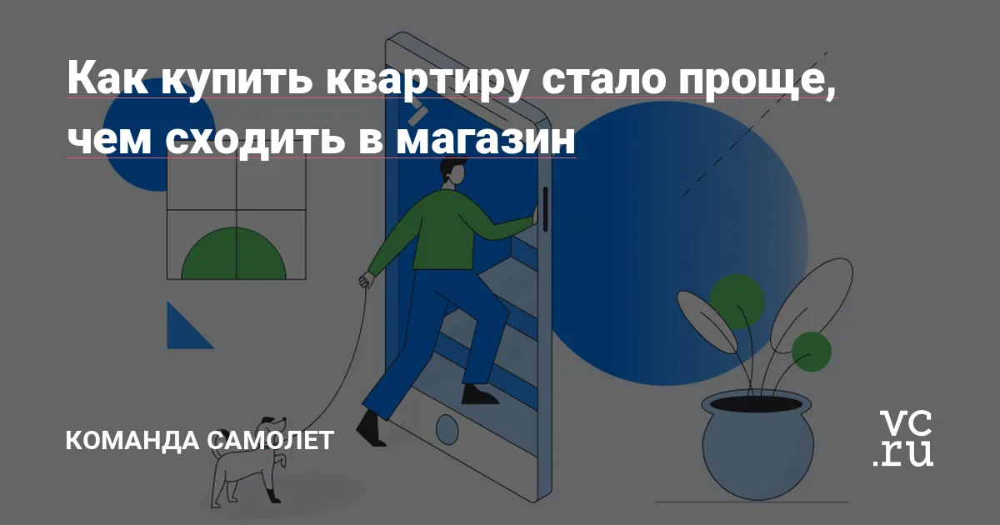
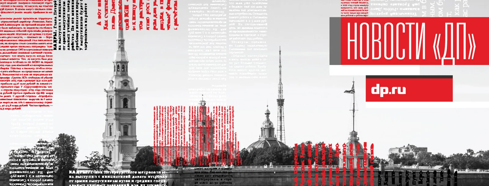
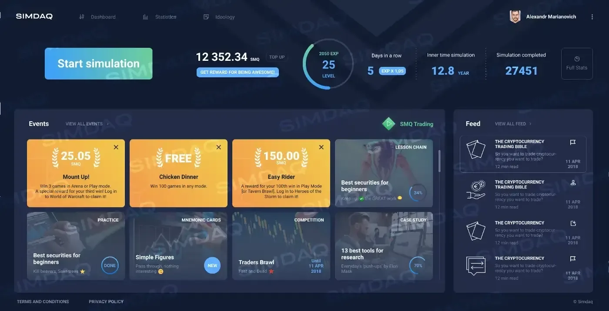
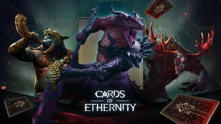
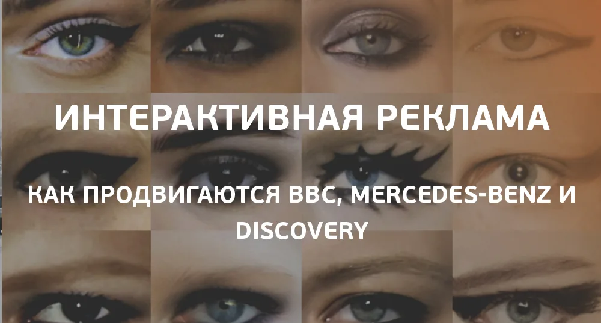

Media: iFellow
ReferencesRaschetnye Resheniya, Strelka and transport processing
Company and industry context for transport payment processing infrastructure.
Role: Project Lead — Transportation Payment Processing.
Editorial archive / Verified sources
Selected articles, interviews, talks, and independent media coverage related to my work in product development, project management, technology, marketing, and digital transformation.
The collection includes my own publications as well as external coverage of products and companies I helped build, launch, manage, transform, or bring to market.
Where a publication covers a company or product rather than me personally, I indicate my role and the period of involvement separately.
Selected evidence / 8 of 28
This is the featured selection. The complete catalogue with all 28 confirmed links follows below.
Company and industry context for transport payment processing infrastructure.
Role: Project Lead — Transportation Payment Processing.

Company publication on the remote apartment-purchase journey accelerated during COVID-19.
Role: Digital Transformation Project Lead connecting web, mobile, CRM, analytics and customer journey initiatives to business cases and P&L.

Partner material describing a simplified digital home-buying journey.
Role: Led transformation portfolio governance and measurable marketing/commercial improvements.

External article quoting Roman Mironichev on employee emotional state, productivity and business impact.
Role: Expert Commentator / CEO, Exiclub

Independent coverage of SIMDAQ funding and the Waves Lab incubation program.
Role: Product Management / Growth Operations contributor; coordinated MVP, roadmap, gamification and international launch.
Official project publication explaining marketplace mechanics and the first release.
Role: Product Management / Growth Operations contributor; this is a project publication, not personal authorship.

Independent media coverage of the international digital product concept and launch.
Role: Product + PMO + Operations: roadmap, MVP, launch and cross-functional growth operations.

A practical article on project-system design, delivery obstacles and moving from fragmented tasks to managed execution.
Role: Author — Roman Mironichev / RomarioHabr
Complete source registry
All confirmed materials are listed here. Filter by attribution first, then narrow by topic.
Company and industry context for transport payment processing infrastructure.
Role: Project Lead — Transportation Payment Processing.

Independent media context for cashless transport payments.
Role: Led prioritization, roadmap, development, testing, releases, production and scaling.
Official source for the company and its payment infrastructure products.
Role: Project Lead — Transportation Payment Processing.
Company publication on the remote apartment-purchase journey accelerated during COVID-19.
Role: Digital Transformation Project Lead connecting web, mobile, CRM, analytics and customer journey initiatives to business cases and P&L.

Independent coverage of online mortgage transactions.
Role: Led digital transformation initiatives across marketing and commercial functions.
External coverage of the end-to-end remote apartment journey.
Role: Digital Transformation Project Lead; no claim that SAMOLET invented all online sales.
Partner material describing a simplified digital home-buying journey.
Role: Led transformation portfolio governance and measurable marketing/commercial improvements.
Independent coverage of SIMDAQ funding and the Waves Lab incubation program.
Role: Product Management / Growth Operations contributor; coordinated MVP, roadmap, gamification and international launch.

Independent coverage of the first projects entering Waves Lab.
Role: Product Management / Growth Operations contributor.

Product coverage describing the historical-data trading simulator and strategy marketplace concept.
Role: Contributed to MVP, Customer Development, roadmap and gamification.
Official project publication explaining marketplace mechanics and the first release.
Role: Product Management / Growth Operations contributor; this is a project publication, not personal authorship.
Public video demonstrating the SIMDAQ platform.
Role: Product reference; Roman is not labelled as the presenter without separate verification.
Independent media coverage of the international digital product concept and launch.
Role: Product + PMO + Operations: roadmap, MVP, launch and cross-functional growth operations.

Sponsored product coverage. Presented as project media, not independent editorial endorsement.
Role: Product + PMO + Operations contributor.
Press-release coverage of the product and funding campaign.
Role: Product + PMO + Operations contributor; not the article author.

Directory profile retained as a product reference.
Role: Product + PMO + Operations contributor.

Independent interview about a portfolio product and its market positioning.
Role: Head of PMO / Product Delivery across a 150+ international product organization.

Third-party product listing retained as evidence of an international portfolio release.
Role: Portfolio Operations / Product Delivery leadership; no authorship claim.

Official company publication describing the StorySpark product.
Role: Head of PMO / Product Delivery; company publication, not personal authorship.

Public product video retained as a portfolio reference; the product domain in the registry is unavailable.
Role: Portfolio Operations / Product Delivery; not presented as personal speaking.

Public product documentation; the registry also includes a product video.
Role: Portfolio Operations / Product Delivery; not presented as personal speaking.

Public product video. The coe.gg domain from the registry now resolves to an unrelated product and is not used.
Role: Portfolio Operations / Product Delivery; not presented as personal speaking.

Author / Director of Business Development, ThingLink Russia
Role: Author / Director of Business Development, ThingLink Russia

A practical essay on teams, uncertainty, MVPs and delivery across IT and game development.
Role: Author — Roman Mironichev / RomarioHabr
A practical article on project-system design, delivery obstacles and moving from fragmented tasks to managed execution.
Role: Author — Roman Mironichev / RomarioHabr

An authored article on project-management compensation, humane team leadership and AI-assisted project work.
Role: Author — Roman Mironichev / RomarioHabr

Industry round-up featuring Roman Mironichev on collaboration tools, remote work and project communications.
Role: Expert Contributor / Founder, Privetmarketing